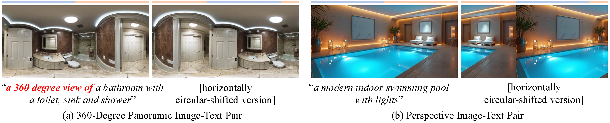
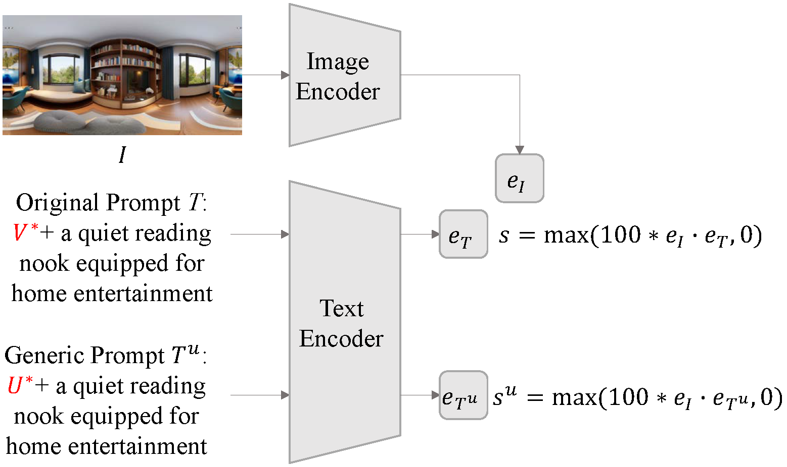
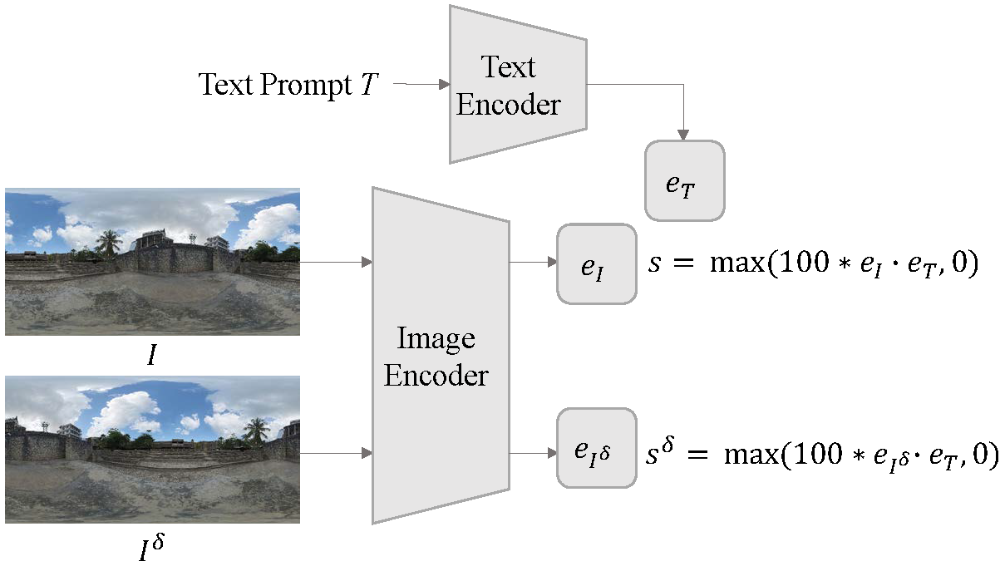
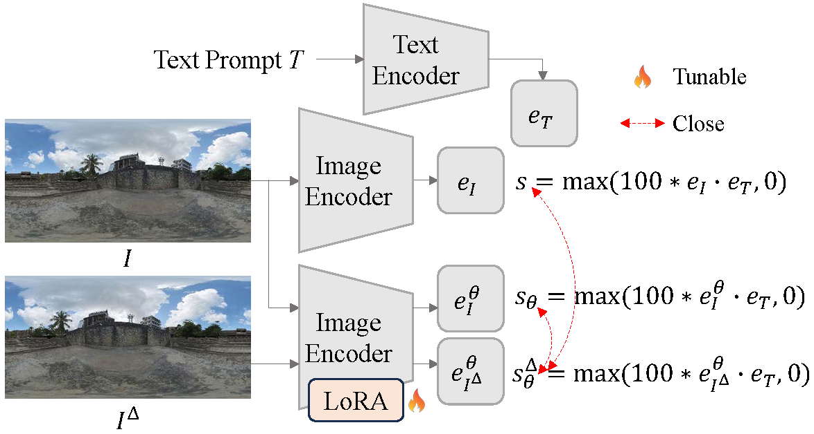

Comparison between 360-degree panoramic image-text pairs and conventional perspective image-text pairs.
Motivation: 360-degree panoramic image-text pairs exhibit distinct semantic attributes in both textual and visual modalities, compared to perspective image-text pairs. Textually, prompts for 360-degree panoramic images often include explicit 360-degree panoramic format identifiers such as “a 360 degree view of” or “360 photo”, which convey what we define as 360-degree textual semantics. Visually, 360-degree panoramic images capture a complete spherical field of view (360° × 180°), which results in inherent semantic invariance under horizontal circular shifts; the scene content remains identical despite rotation. We term this invariant semantics 360-degree visual semantics.
Research Question: To what extent can standard CLIP models, predominantly trained on perspective image-text pairs, comprehend the distinct semantics inherent in 360-degree panoramic image-text pairs?

Overview of our framework to evaluate CLIP models’ understanding of 360-degree textual semantics. The format cue V* is a keyword explicitly identifying the 360-degree panoramic image format (e.g., “360 panorama”, “360 photo”), while U* is a generic cue (e.g., “photo”, “image”) that lacks specific 360-degree panoramic format information.
Finding: CLIP models can comprehend 360-degree textual semantics.

Overview of our framework to assess CLIP models’ understanding of 360-degree visual semantics. Image Iδ is obtained by applying a horizontal circular shift of δ pixels to I of size H × W.
Finding: CLIP models lack a robust understanding of 360-degree visual semantics.

Overview of the fine-tuning framework using LoRA.
Finding: Fine-tuning that instills shift invariance can improve comprehension of 360-degree visual semantics, while incurring a slight degradation in baseline performance, highlighting the trade-off inherent in adapting CLIP for 360-degree panoramas.
TBD